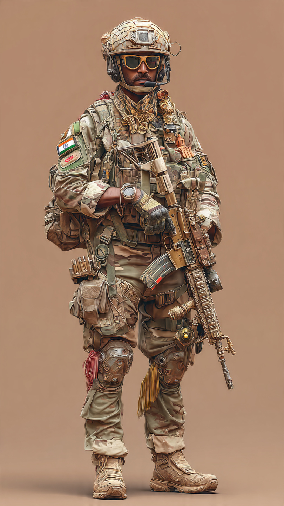
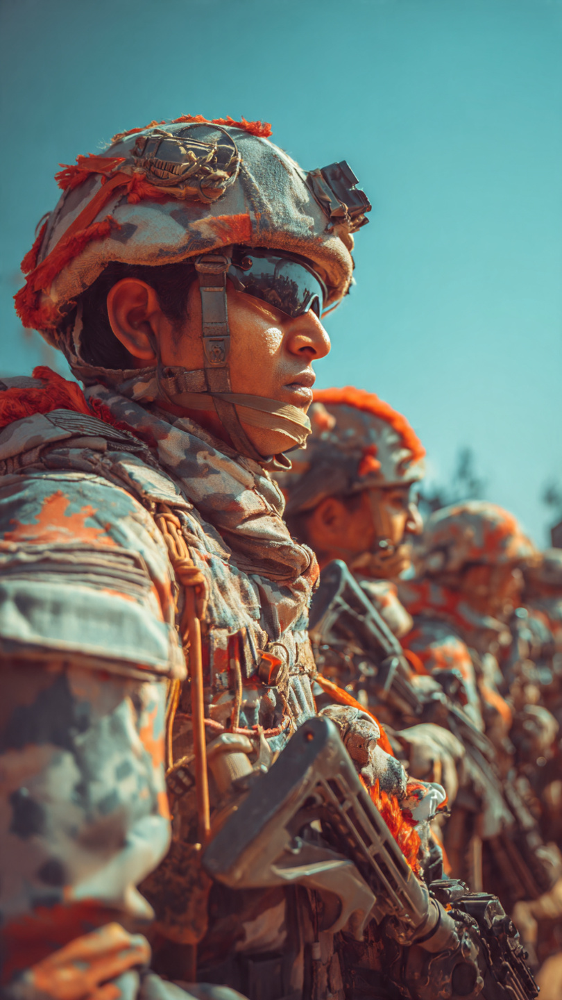

The Indian Army Agniveer Recruitment 2026 has reached its final stage, with today marking the last date for submitting applications. Thousands of aspiring candidates across the country are rushing to complete their registrations before the deadline closes.
This recruitment drive is one of the largest employment opportunities for youth in India, offering around 25,000 vacancies under the Agnipath scheme. The scheme has gained significant attention since its launch, attracting lakhs of applicants each year.
The response to the Agniveer Recruitment 2026 has been overwhelming. Young individuals from both urban and rural areas have shown immense interest in joining the Indian Army through this scheme. With increasing competition and limited vacancies, applicants are ensuring they submit their forms before the portal closes.
Experts believe that the final day usually sees a huge surge in applications, which may lead to server slowdowns or technical glitches. Therefore, candidates are advised not to wait until the last minute.

The Agnipath scheme was introduced to recruit young individuals into the armed forces for a short-term service period. Selected candidates, known as Agniveers, serve for four years, during which they receive military training, discipline, and valuable life skills.
After completion of their service, a percentage of Agniveers are retained for longer service based on performance, while others receive financial packages and skill certifications to help them build future careers.
To apply for the Agniveer recruitment, candidates must meet certain eligibility requirements. Generally, applicants should fall within the specified age limit and must have completed their minimum educational qualifications as per the post requirements.
Physical fitness is a crucial part of the selection process. Candidates are required to pass physical tests, medical examinations, and written assessments before final selection.
The selection process involves multiple stages, including:
• Online application submission • Physical fitness test • Medical examination • Written examination
Only those candidates who successfully clear all stages will be selected as Agniveers in the Indian Army.
The Agniveer recruitment offers a unique opportunity for youth to serve the nation while gaining valuable skills. Apart from the pride of wearing the uniform, candidates receive financial benefits, training, and exposure that can help them in both military and civilian careers.
With unemployment being a concern among youth, such large-scale recruitment drives provide a significant boost to job opportunities and national development.
As the deadline approaches, cyber cafes and online centers are witnessing heavy crowds of applicants trying to submit their forms. Authorities have advised candidates to ensure all details are correctly filled and documents are properly uploaded.
Any errors in the application may lead to rejection, so careful verification is essential before final submission.
The Indian Army Agniveer Recruitment 2026 is closing today, making it the final chance for eligible candidates to apply. With around 25,000 vacancies and intense competition, this is a golden opportunity for youth aiming to serve the nation.
Candidates are strongly encouraged to act immediately and complete their application process without delay. Missing this deadline means waiting for the next recruitment cycle, which could take time.
Stay updated with official notifications and prepare well for the next stages of selection if you have successfully applied.